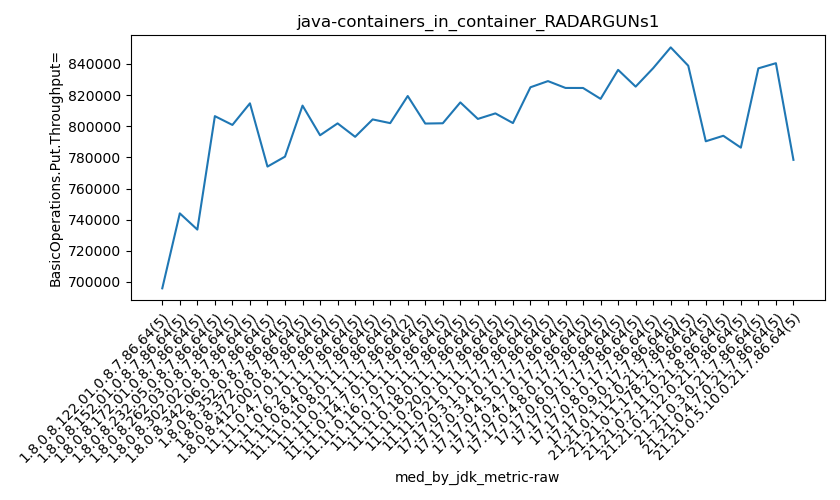
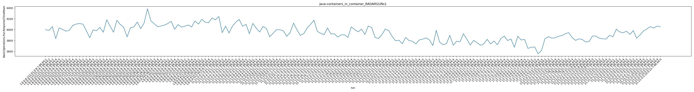
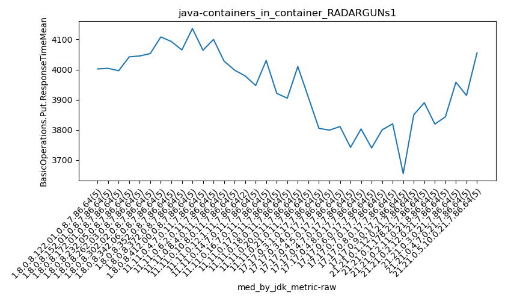

java- RADARGUNs1
Context at bottom
/home/jvanek/git/benchmarks-in-nested-virtualisation-toolchain/final_results/containers_in_container_results/containers_in_container_DACAPO
java-
RADARGUNs1
/home/jvanek/git/benchmarks-in-nested-virtualisation-toolchain/final_results/containers_in_container_results/containers_in_container_JMH
java-
RADARGUNs1
/home/jvanek/git/benchmarks-in-nested-virtualisation-toolchain/final_results/containers_in_container_results/containers_in_container_SPECJBB
java-
RADARGUNs1
/home/jvanek/git/benchmarks-in-nested-virtualisation-toolchain/final_results/containers_in_container_results/containers_in_container_RADARGUNs1
java-
RADARGUNs1
containers_in_container_RADARGUNs1
- containers_in_container_RADARGUNs1 - throughput get
- containers_in_container_RADARGUNs1 - throughput put
- containers_in_container_RADARGUNs1 - response mean time get
- containers_in_container_RADARGUNs1 - response mean time put
containers_in_container_RADARGUNs1 - throughput get
Expected number of java- JDKs: 37
1st avgmed_alljdks_metric:
/home/jvanek/git/benchmarks-in-nested-virtualisation-toolchain/final_results/result_processing.py /home/jvanek/git/benchmarks-in-nested-virtualisation-toolchain/final_results/containers_in_container_results/containers_in_container_RADARGUNs1 BasicOperations.Get.Throughput= False
values: [3145826, 2697254, 3220052, 2766708, 2783345, 3057132, 2976261, 3034213, 2957624, 2730899, 2793294, 3190813, 3295606, 2934383, 2691672, 3125312, 3225754, 3253470, 3111970, 3244578, 3227696, 3208492, 3203428, 3070257, 2945178, 3264015, 3258521, 3252568, 3159428, 3277086, 3096350, 3133905, 2972586, 3296719, 2827026, 3238251, 3121820, 3014850, 3274031, 2977002, 3252979, 3269891, 3078060, 3295332, 3214198, 2828669, 3176762, 3113671, 3264525, 3183322, 3183969, 2852640, 3214662, 3207178, 3247350, 3223885, 3216167, 3156736, 3116832, 3172644, 3229827, 3197191, 2915625, 3217408, 3252514, 3207727, 3317437, 3166074, 2934610, 3222655, 3277257, 2929698, 2909227, 3100603, 3207030, 3256702, 3300745, 3179260, 3159102, 3208048, 3278921, 3326624, 3279174, 3240240, 3267410, 3238363, 3260889, 3247776, 3239829, 3213483, 3219025, 3179818, 3232847, 2892854, 3307925, 3263669, 3187771, 3331409, 2998175, 3272093, 3176632, 3208348, 3321413, 3316792, 3279597, 3297480, 3300037, 3328081, 3315766, 3295772, 3340809, 3224164, 2839375, 3348385, 2855813, 3298351, 3345367, 3333968, 2800306, 3298288, 3064129, 3300668, 3329259, 3270228, 3241356, 3264744, 3386946, 3344675, 3139929, 3370615, 3147670, 3348721, 3301732, 3345834, 3220949, 2970360, 3361082, 3356039, 3348959, 3112410, 3332438, 3375563, 3402524, 3466014, 3311536, 3311308, 3467426, 3334233, 3469985, 3355043, 3118815, 3390791, 3368957, 3136792, 3161357, 3039990, 3243910, 3141517, 3221930, 3161550, 3175476, 3238957, 3106742, 3283455, 3074001, 3144981, 3462148, 3394456, 3351883, 3275921, 3348417, 3329051, 3445363, 3259480, 3075811, 3361794, 3372004, 3097559, 3113684, 3024595, 3288616, 3113684]

Expected number of iterations: 5
final number of values: 182 out of 185
Pass rate: 98.4%
values: (2691672, 3469985, 3191718.0659340657, 3225754)

** accuracy from all jdks and runs
more is better
MIN: 2691672
MAX: 3469985
AVG: 3191718.0659340657
MED: 3225754
Relative differences 1:
MIN-MAX: 22.0 %
MIN-AVG: 16.0 %
MIN-MED: 17.0 %
MAX-MIN: -29.0 %
MAX-AVG: -9.0 %
MAX-MED: -8.0 %
AVG-MED: 1.0 %
stored to java-.properties. sort | uniq that!
2nd avgmed_by_jdk_metric:
values: [2922637.0, 2951225.8, 2981153.6, 3192216.8, 3131010.2, 3242323.6, 3065317.2, 3125190.8, 3222092.0, 3113389.8, 3141159.8, 3177252.8, 3162513.0, 3169700.6, 3103477.5, 3154861.4, 3230391.0, 3257215.2, 3219986.2, 3177013.2, 3197331.4, 3303063.8, 3300918.4, 3137458.2, 3159471.8, 3298506.6, 3270322.0, 3239991.4, 3305081.8, 3391761.6, 3333773.4, 3190201.2, 3187886.0, 3214265.4, 3339945.6, 3302890.4, 3127627.6]

values: [2783345, 2976261, 2934383, 3225754, 3203428, 3258521, 3096350, 3121820, 3252979, 3176762, 3207178, 3172644, 3217408, 3207727, 3277257, 3207030, 3208048, 3260889, 3219025, 3232847, 3208348, 3300037, 3315766, 3298351, 3298288, 3270228, 3344675, 3301732, 3348959, 3402524, 3355043, 3161357, 3175476, 3144981, 3348417, 3361794, 3113684]

values: (2922637.0, 3391761.6, 3190287.1378378375, 3190201.2)
values: (2783345, 3402524, 3215927.4594594594, 3219025)

** accuracy from all jdks where runs were avged
more is better
MIN: 2922637.0
MAX: 3391761.6
AVG: 3190287.1378378375
MED: 3190201.2
Relative differences 1:
MIN-MAX: 14.0 %
MIN-AVG: 8.0 %
MIN-MED: 8.0 %
MAX-MIN: -16.0 %
MAX-AVG: -6.0 %
MAX-MED: -6.0 %
AVG-MED: -0.0 %
stored to java-.properties. sort | uniq that!
** accuracy from all jdks where runs were medianed
more is better
MIN: 2783345
MAX: 3402524
AVG: 3215927.4594594594
MED: 3219025
Relative differences 1:
MIN-MAX: 18.0 %
MIN-AVG: 13.0 %
MIN-MED: 14.0 %
MAX-MIN: -22.0 %
MAX-AVG: -6.0 %
MAX-MED: -6.0 %
AVG-MED: 0.0 %
stored to java-.properties. sort | uniq that!
containers_in_container_RADARGUNs1 - throughput put
Expected number of java- JDKs: 37
1st avgmed_alljdks_metric:
/home/jvanek/git/benchmarks-in-nested-virtualisation-toolchain/final_results/result_processing.py /home/jvanek/git/benchmarks-in-nested-virtualisation-toolchain/final_results/containers_in_container_results/containers_in_container_RADARGUNs1 BasicOperations.Put.Throughput= False
values: [786501, 674257, 805087, 691684, 695902, 764276, 744036, 758629, 739395, 682718, 698329, 797656, 823859, 733620, 672844, 781360, 806465, 813424, 777980, 811164, 806961, 802123, 800822, 767560, 736304, 816005, 814689, 813029, 789930, 819269, 774072, 783449, 743159, 824080, 706756, 809522, 780472, 753740, 818488, 744264, 813236, 817516, 769583, 823814, 803430, 707176, 794195, 778469, 816199, 795848, 796061, 713058, 803713, 801815, 811830, 805999, 804051, 789278, 779163, 793193, 807447, 799303, 728824, 804359, 813078, 801977, 829378, 791504, 733722, 805688, 819387, 732473, 727240, 775157, 801711, 814113, 825205, 794825, 789733, 801889, 819725, 831721, 819828, 810014, 816906, 809532, 815289, 811931, 809896, 803393, 804679, 794934, 808232, 723201, 826954, 815994, 796963, 832862, 749535, 817987, 794114, 802021, 830377, 829171, 819896, 824404, 825010, 832074, 828964, 824045, 835157, 806018, 709835, 837121, 713896, 824573, 836296, 833490, 700055, 824550, 766058, 825220, 832306, 817566, 810332, 816107, 846769, 836182, 784937, 842616, 786957, 837132, 825429, 836519, 805216, 742609, 840271, 839059, 837280, 778131, 833137, 843887, 850620, 866566, 827955, 827799, 866880, 833504, 867491, 838836, 779671, 847719, 842262, 784292, 790325, 760031, 811016, 785396, 805566, 790364, 793857, 809747, 776647, 820854, 768448, 786239, 865536, 848571, 838023, 818948, 837160, 832277, 861328, 814924, 768936, 840460, 843031, 774391, 778395, 756113, 822107, 778395]
Expected number of iterations: 5
final number of values: 182 out of 185
Pass rate: 98.4%
values: (672844, 867491, 797931.6648351648, 806465)

** accuracy from all jdks and runs
more is better
MIN: 672844
MAX: 867491
AVG: 797931.6648351648
MED: 806465
Relative differences 1:
MIN-MAX: 22.0 %
MIN-AVG: 16.0 %
MIN-MED: 17.0 %
MAX-MIN: -29.0 %
MAX-AVG: -9.0 %
MAX-MED: -8.0 %
AVG-MED: 1.0 %
stored to java-.properties. sort | uniq that!
2nd avgmed_by_jdk_metric:
values: [730686.2, 737810.8, 745261.6, 798078.6, 782754.0, 810584.4, 766303.2, 781297.2, 805515.8, 778377.4, 785295.4, 794336.8, 790602.2, 792453.8, 775930.0, 788685.2, 807578.6, 814313.8, 804966.6, 794268.8, 799303.8, 825771.6, 825251.6, 784344.2, 789874.6, 824616.0, 817564.8, 810008.8, 826298.8, 847964.0, 833444.2, 797585.2, 796986.0, 803544.8, 834995.8, 825735.8, 781880.2]

values: [695902, 744036, 733620, 806465, 800822, 814689, 774072, 780472, 813236, 794195, 801815, 793193, 804359, 801977, 819387, 801711, 801889, 815289, 804679, 808232, 802021, 825010, 828964, 824573, 824550, 817566, 836182, 825429, 837280, 850620, 838836, 790325, 793857, 786239, 837160, 840460, 778395]

values: (730686.2, 847964.0, 797574.8810810811, 797585.2)
values: (695902, 850620, 803986.6756756756, 804679)

** accuracy from all jdks where runs were avged
more is better
MIN: 730686.2
MAX: 847964.0
AVG: 797574.8810810811
MED: 797585.2
Relative differences 1:
MIN-MAX: 14.0 %
MIN-AVG: 8.0 %
MIN-MED: 8.0 %
MAX-MIN: -16.0 %
MAX-AVG: -6.0 %
MAX-MED: -6.0 %
AVG-MED: 0.0 %
stored to java-.properties. sort | uniq that!
** accuracy from all jdks where runs were medianed
more is better
MIN: 695902
MAX: 850620
AVG: 803986.6756756756
MED: 804679
Relative differences 1:
MIN-MAX: 18.0 %
MIN-AVG: 13.0 %
MIN-MED: 14.0 %
MAX-MIN: -22.0 %
MAX-AVG: -6.0 %
MAX-MED: -6.0 %
AVG-MED: 0.0 %
stored to java-.properties. sort | uniq that!
containers_in_container_RADARGUNs1 - response mean time get
Expected number of java- JDKs: 37
1st avgmed_alljdks_metric:
/home/jvanek/git/benchmarks-in-nested-virtualisation-toolchain/final_results/result_processing.py /home/jvanek/git/benchmarks-in-nested-virtualisation-toolchain/final_results/containers_in_container_results/containers_in_container_RADARGUNs1 BasicOperations.Get.ResponseTimeMean True
values: [1133, 1054, 1125, 1074, 1066, 1138, 1078, 1099, 1123, 1111, 1143, 1075, 1066, 1091, 1190, 1122, 1123, 1112, 1148, 1138, 1128, 1131, 1152, 1110, 1083, 1135, 1138, 1125, 1114, 1088, 1170, 1148, 1135, 1133, 1116, 1128, 1124, 1104, 1108, 1165, 1118, 1086, 1175, 1084, 1124, 1182, 1149, 1123, 1135, 1180, 1125, 1141, 1160, 1079, 1070, 1141, 1100, 1165, 1142, 1137, 1134, 1131, 1110, 1120, 1109, 1137, 1070, 1151, 1102, 1125, 1129, 1115, 1139, 1194, 1133, 1127, 1068, 1133, 1145, 1119, 1139, 1076, 1089, 1105, 1092, 1114, 1092, 1111, 1130, 1109, 1131, 1153, 1119, 1123, 1092, 1108, 1139, 1099, 1085, 1073, 1111, 1131, 1049, 1093, 1144, 1146, 1059, 1074, 1074, 1081, 1086, 1154, 1089, 1078, 1080, 1085, 1082, 1078, 1081, 1086, 1081, 1074, 1090, 1095, 1169, 1127, 1049, 1035, 1071, 1041, 1058, 1055, 1090, 1071, 1058, 1062, 1060, 1069, 1059, 1072, 1093, 1051, 1011, 996, 1034, 1022, 1016, 1057, 1068, 1070, 1073, 1100, 1081, 1056, 1103, 1099, 1089, 1057, 1060, 1081, 1060, 1046, 1043, 1090, 1067, 1079, 1072, 1131, 1104, 1107, 1089, 1071, 1086, 1098, 1070, 1119, 1102, 1111, 1095, 1120, 1108, 1095]

Expected number of iterations: 5
final number of values: 182 out of 185
Pass rate: 98.4%
values: (996, 1194, 1101.9615384615386, 1102)

** accuracy from all jdks and runs
more is worse
MIN: 1194
MAX: 996
AVG: 1101.9615384615386
MED: 1102
Relative differences 1:
MIN-MAX: 20.0 %
MIN-AVG: 8.0 %
MIN-MED: 8.0 %
MAX-MIN: -17.0 %
MAX-AVG: -10.0 %
MAX-MED: -10.0 %
AVG-MED: -0.0 %
stored to java-.properties. sort | uniq that!
2nd avgmed_by_jdk_metric:
values: [1090.4, 1109.8, 1113.0, 1128.6, 1120.8, 1120.0, 1140.4, 1125.8, 1117.4, 1153.8, 1115.0, 1137.0, 1120.8, 1117.0, 1122.0, 1132.2, 1122.4, 1098.4, 1126.8, 1116.2, 1099.8, 1098.2, 1093.8, 1082.8, 1080.0, 1106.0, 1052.0, 1068.2, 1068.8, 1015.8, 1073.6, 1085.6, 1060.8, 1070.2, 1100.4, 1095.0, 1105.8]

values: [1074, 1111, 1091, 1123, 1128, 1125, 1135, 1124, 1118, 1149, 1125, 1141, 1120, 1125, 1129, 1133, 1133, 1092, 1130, 1119, 1099, 1093, 1081, 1082, 1081, 1095, 1055, 1062, 1069, 1016, 1070, 1089, 1060, 1072, 1104, 1098, 1108]

values: (1015.8, 1153.8, 1102.2864864864864, 1106.0)
values: (1016, 1149, 1101.5945945945946, 1104)

** accuracy from all jdks where runs were avged
more is worse
MIN: 1153.8
MAX: 1015.8
AVG: 1102.2864864864864
MED: 1106.0
Relative differences 1:
MIN-MAX: 14.0 %
MIN-AVG: 5.0 %
MIN-MED: 4.0 %
MAX-MIN: -12.0 %
MAX-AVG: -8.0 %
MAX-MED: -8.0 %
AVG-MED: -0.0 %
stored to java-.properties. sort | uniq that!
** accuracy from all jdks where runs were medianed
more is worse
MIN: 1149
MAX: 1016
AVG: 1101.5945945945946
MED: 1104
Relative differences 1:
MIN-MAX: 13.0 %
MIN-AVG: 4.0 %
MIN-MED: 4.0 %
MAX-MIN: -12.0 %
MAX-AVG: -8.0 %
MAX-MED: -8.0 %
AVG-MED: -0.0 %
stored to java-.properties. sort | uniq that!
containers_in_container_RADARGUNs1 - response mean time put
Expected number of java- JDKs: 37
1st avgmed_alljdks_metric:
/home/jvanek/git/benchmarks-in-nested-virtualisation-toolchain/final_results/result_processing.py /home/jvanek/git/benchmarks-in-nested-virtualisation-toolchain/final_results/containers_in_container_results/containers_in_container_RADARGUNs1 BasicOperations.Put.ResponseTimeMean True
values: [4002, 3986, 4057, 3835, 4032, 4004, 3973, 3989, 4077, 4104, 4113, 4102, 3981, 3853, 3996, 3981, 4042, 3952, 4182, 4067, 3952, 4172, 4095, 4045, 3868, 4036, 4053, 4141, 4020, 4122, 4385, 4163, 4108, 4056, 4068, 4085, 4114, 4153, 4008, 4093, 4047, 4065, 4086, 4051, 4160, 4103, 4191, 4136, 4129, 4216, 4180, 4244, 3945, 4064, 3940, 4064, 4139, 4188, 4061, 4100, 3925, 4116, 4028, 3956, 4059, 4022, 3868, 3936, 4000, 3998, 3979, 3878, 3947, 4121, 3999, 3894, 3927, 4030, 4098, 4175, 3969, 3933, 3908, 4032, 3921, 3925, 3865, 3904, 3905, 3858, 4051, 4001, 3960, 4010, 3912, 4068, 4040, 3858, 3837, 3908, 4012, 3983, 3878, 3796, 3805, 3743, 3857, 3799, 3788, 3737, 3811, 3826, 3849, 3811, 3708, 3987, 3771, 3724, 3742, 3895, 3713, 3787, 3776, 3926, 3825, 3717, 3803, 3763, 3713, 3740, 3822, 3737, 3791, 3723, 3835, 3881, 3800, 3827, 3676, 3880, 3811, 3820, 3655, 3678, 3680, 3555, 3620, 3834, 3871, 3844, 3850, 3880, 3890, 3927, 3945, 3856, 3803, 3831, 3819, 3773, 3782, 3884, 3882, 3843, 3833, 3828, 3896, 3870, 4010, 3958, 3944, 3971, 3914, 3982, 3842, 3904, 3976, 4013, 4055, 4031, 4065, 4055]

Expected number of iterations: 5
final number of values: 182 out of 185
Pass rate: 98.4%
values: (3555, 4385, 3943.5824175824177, 3945)

** accuracy from all jdks and runs
more is worse
MIN: 4385
MAX: 3555
AVG: 3943.5824175824177
MED: 3945
Relative differences 1:
MIN-MAX: 23.0 %
MIN-AVG: 11.0 %
MIN-MED: 11.0 %
MAX-MIN: -19.0 %
MAX-AVG: -10.0 %
MAX-MED: -10.0 %
AVG-MED: -0.0 %
stored to java-.properties. sort | uniq that!
2nd avgmed_by_jdk_metric:
values: [3982.4, 4029.4, 4009.0, 4044.8, 4026.4, 4074.4, 4156.0, 4090.6, 4081.8, 4155.0, 4074.6, 4110.4, 4016.8, 3964.8, 3928.5, 3977.6, 4041.0, 3930.2, 3943.8, 3998.0, 3919.6, 3815.8, 3792.2, 3825.2, 3772.2, 3809.4, 3755.0, 3806.0, 3802.8, 3637.6, 3855.8, 3884.2, 3817.8, 3856.4, 3950.6, 3923.6, 4043.8]
values: [4002, 4004, 3996, 4042, 4045, 4053, 4108, 4093, 4065, 4136, 4064, 4100, 4028, 3998, 3979, 3947, 4030, 3921, 3905, 4010, 3908, 3805, 3799, 3811, 3742, 3803, 3740, 3800, 3820, 3655, 3850, 3890, 3819, 3843, 3958, 3914, 4055]

values: (3637.6, 4156.0, 3943.337837837838, 3950.6)
values: (3655, 4136, 3938.864864864865, 3958)

** accuracy from all jdks where runs were avged
more is worse
MIN: 4156.0
MAX: 3637.6
AVG: 3943.337837837838
MED: 3950.6
Relative differences 1:
MIN-MAX: 14.0 %
MIN-AVG: 5.0 %
MIN-MED: 5.0 %
MAX-MIN: -12.0 %
MAX-AVG: -8.0 %
MAX-MED: -8.0 %
AVG-MED: -0.0 %
stored to java-.properties. sort | uniq that!
** accuracy from all jdks where runs were medianed
more is worse
MIN: 4136
MAX: 3655
AVG: 3938.864864864865
MED: 3958
Relative differences 1:
MIN-MAX: 13.0 %
MIN-AVG: 5.0 %
MIN-MED: 4.0 %
MAX-MIN: -12.0 %
MAX-AVG: -7.0 %
MAX-MED: -8.0 %
AVG-MED: -0.0 %
stored to java-.properties. sort | uniq that!
/home/jvanek/git/benchmarks-in-nested-virtualisation-toolchain/final_results/containers_in_container_results/containers_in_container_J2DBENCH
java-
RADARGUNs1
/home/jvanek/git/benchmarks-in-nested-virtualisation-toolchain/final_results/containers_in_container_results/containers_in_container_RADARGUNs3
java-
RADARGUNs1
pass rates:
containers_in_container_RADARGUNs1=98.4%
Context:
- containers_in_container_results
- RADARGUNs1